story
物 語
人間のいない世界。そこでは生き残った超獣たちが平和に暮らしていた、はずだった。気づけば残されたどんぐりはわずか。
全員で協力して生き残るか、他者を見捨てて自分だけが生き残るか。争いを避けるため、超獣たちは交代でリーダーを務め、すべての判断をその一匹に委ねることにした。

人間のいない世界。そこでは生き残った超獣たちが平和に暮らしていた、はずだった。気づけば残されたどんぐりはわずか。
全員で協力して生き残るか、他者を見捨てて自分だけが生き残るか。争いを避けるため、超獣たちは交代でリーダーを務め、すべての判断をその一匹に委ねることにした。


仲間思いで、仲間のために誰よりも早く動く。
ただし臆病者の一面もあり、苦手なものも多い。